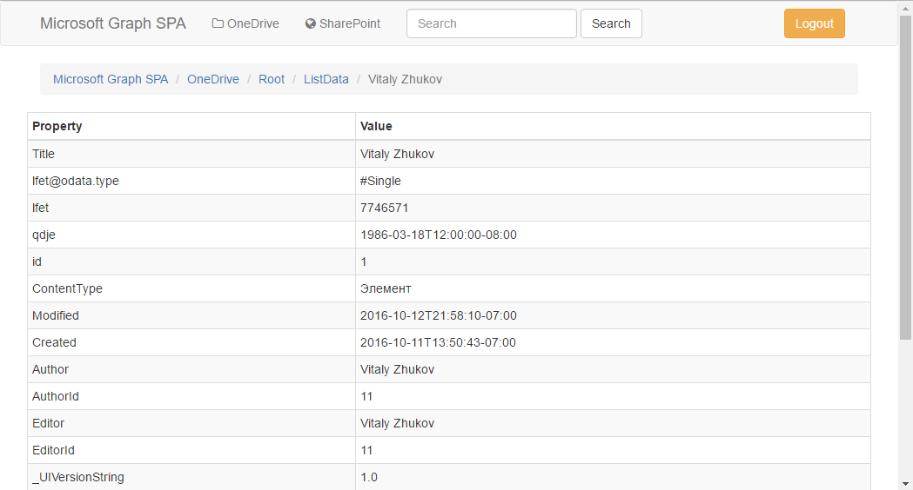

Microsoft Graph. AngularJS SPA to interact with SharePoint Online
Introduction
Single Page web Application built on AngularJS consuming Microsoft API to interact with SharePoint Online. The application has no any server-side code.

Building the Sample
The solution is built using Visual Studio 2015. Visual Studio 2015 could not be used at all, cause the app coded using only HTML, CSS and JavaScript. Visual Studio 2015 used only for convenience features (built-in bower package manager, code formatting, etc.)
Registering your apps with Azure AD
First of all it's necessary to register you app with Azure AD to grant it access to users' OneDrive in your Office 365 tenant.
Instruction how to do it: Manually register your app with Azure AD so it can access Office 365 APIs
Permissions required for the App:
- Sites.Read.All
- Sites.ReadWrite.All
Application
Authentication
The application uses Azure AD Authentication Library (ADAL) for user authetication. In case of AngularJS reference to the following js-files is sufficient to implament Azure AD authentication:
<script src="https://secure.aadcdn.microsoftonline-p.com/lib/1.0.7/js/adal.min.js"></script> <script src="https://secure.aadcdn.microsoftonline-p.com/lib/1.0.7/js/adal-angular.min.js"></script>
<script src="https://secure.aadcdn.microsoftonline-p.com/lib/1.0.7/js/adal.min.js"></script> <script src="https://secure.aadcdn.microsoftonline-p.com/lib/1.0.7/js/adal-angular.min.js"></script>
adalAuthenticationService.login();
adalAuthenticationService.login();
adalAuthenticationService.logOut();
adalAuthenticationService.logOut();
REST API
GET: https://graph.microsoft.com/beta/sharepoint/{siteCollectionId},{siteId}/lists/{listId}/items
Factory
To implement interaction between Office 365 and our SPA there is AngularJS factory. It's just HTTP-request wrapper indeed:
angular
.module('MicrosoftGraphSPA')
.constant('graphBetaUrl', 'https://graph.microsoft.com/beta')
.factory('spFactory',
[
'$http', 'graphBetaUrl',
function($http, graphBetaUrl) {
var spFactory = {};
// Получение списка сайтов
spFactory.getSites = function(siteId) {
var url = graphBetaUrl + '/sharepoint/sites';
if (siteId) {
url = url + '/' + siteId + '/sites';
}
return $http({
method: 'GET',
url: url
});
};
// Получение информации о сайте
spFactory.getSite = function(siteId) {
return $http({
method: 'GET',
url: graphBetaUrl + '/sharepoint/sites/' + siteId
});
};
// Получение списков сайта
spFactory.getLists = function(siteId) {
return $http({
method: 'GET',
url: graphBetaUrl + '/sharepoint/sites/' + siteId + '/lists'
});
};
// ...
return spFactory;
}
]);
angular .module('MicrosoftGraphSPA') .constant('graphBetaUrl', 'https://graph.microsoft.com/beta') .factory('spFactory', [ '$http', 'graphBetaUrl', function($http, graphBetaUrl) { var spFactory = {}; // Получение списка сайтов spFactory.getSites = function(siteId) { var url = graphBetaUrl + '/sharepoint/sites'; if (siteId) { url = url + '/' + siteId + '/sites'; } return $http({ method: 'GET', url: url }); }; // Получение информации о сайте spFactory.getSite = function(siteId) { return $http({ method: 'GET', url: graphBetaUrl + '/sharepoint/sites/' + siteId }); }; // Получение списков сайта spFactory.getLists = function(siteId) { return $http({ method: 'GET', url: graphBetaUrl + '/sharepoint/sites/' + siteId + '/lists' }); }; // ... return spFactory; } ]);
Controller
The controller to use the factory' methods and provide results to the view is simple:
(function () {
angular
.module('MicrosoftGraphSPA')
.controller('SPController', [
'$scope', '$rootScope', '$http', '$routeParams', 'spFactory',
function ($scope, $rootScope, $http, $routeParams, spFactory) {
// Параметры из роутинга
$scope.siteId = $routeParams.siteId;
$scope.listId = $routeParams.listId;
$scope.itemId = $routeParams.itemId;
$scope.sites = null;
$scope.lists = null;
$scope.items = null;
$scope.item = null;
$scope.site = null;
$scope.list = null;
// Загрузка данных
$scope.init = function () {
// Очищаем результат предыдущего запроса
$scope.clearResponse();
// Получаем дочерние сайты или корневые
spFactory.getSites($scope.siteId).then(
function(response) {
$scope.sites = response.data.value;
},
$rootScope.responseError);
// Если выбран сайн
if ($scope.siteId) {
// Получение информации о сайте
spFactory.getSite($scope.siteId).then(
function (response) {
$scope.site = response.data;
},
$rootScope.responseError);
// Получение списков для сайта
spFactory.getLists($scope.siteId).then(
function(response) {
$scope.lists = response.data.value;
},
$rootScope.responseError);
// Если выбран список
if ($scope.listId) {
// Получение информации о списке
spFactory.getList($scope.siteId, $scope.listId).then(
function (response) {
$scope.list = response.data;
},
$rootScope.responseError);
//Получение элементов
spFactory.getItems($scope.siteId, $scope.listId).then(
function(response) {
$scope.items = response.data.value;
},
$rootScope.responseError);
}
// Если выбран элемент
if ($scope.itemId) {
// Получение информации ою элементе
spFactory.getItem($scope.siteId, $scope.listId, $scope.itemId).then(
function(response) {
$scope.item = response.data;
},
$rootScope.responseError);
}
}
}
$scope.init();
}
]);
})();
(function () { angular .module('MicrosoftGraphSPA') .controller('SPController', [ '$scope', '$rootScope', '$http', '$routeParams', 'spFactory', function ($scope, $rootScope, $http, $routeParams, spFactory) { // Параметры из роутинга $scope.siteId = $routeParams.siteId; $scope.listId = $routeParams.listId; $scope.itemId = $routeParams.itemId; $scope.sites = null; $scope.lists = null; $scope.items = null; $scope.item = null; $scope.site = null; $scope.list = null; // Загрузка данных $scope.init = function () { // Очищаем результат предыдущего запроса $scope.clearResponse(); // Получаем дочерние сайты или корневые spFactory.getSites($scope.siteId).then( function(response) { $scope.sites = response.data.value; }, $rootScope.responseError); // Если выбран сайн if ($scope.siteId) { // Получение информации о сайте spFactory.getSite($scope.siteId).then( function (response) { $scope.site = response.data; }, $rootScope.responseError); // Получение списков для сайта spFactory.getLists($scope.siteId).then( function(response) { $scope.lists = response.data.value; }, $rootScope.responseError); // Если выбран список if ($scope.listId) { // Получение информации о списке spFactory.getList($scope.siteId, $scope.listId).then( function (response) { $scope.list = response.data; }, $rootScope.responseError); //Получение элементов spFactory.getItems($scope.siteId, $scope.listId).then( function(response) { $scope.items = response.data.value; }, $rootScope.responseError); } // Если выбран элемент if ($scope.itemId) { // Получение информации ою элементе spFactory.getItem($scope.siteId, $scope.listId, $scope.itemId).then( function(response) { $scope.item = response.data; }, $rootScope.responseError); } } } $scope.init(); } ]); })();
Views and routing
The Single Page App contains four views:
- List root sites (list of site collections)
- Site content (subsites and lists)
- List Items
- Item
So routing in angular config method:
.when('/sp', { //SharePoint
templateUrl: 'views/sp.html',
controller: 'SPController',
controllerAs: 'controller'
})
.when('/sp/:siteId', { //SharePoint/Site
templateUrl: 'views/sp/site.html',
controller: 'SPController',
controllerAs: 'controller'
})
.when('/sp/:siteId/:listId', { //SharePoint/Site/List
templateUrl: 'views/sp/list.html',
controller: 'SPController',
controllerAs: 'controller'
})
.when('/sp/:siteId/:listId/:itemId', { //SharePoint/Site/List/Item
templateUrl: 'views/sp/item.html',
controller: 'SPController',
controllerAs: 'controller'
})
.when('/sp', { //SharePoint templateUrl: 'views/sp.html', controller: 'SPController', controllerAs: 'controller' }) .when('/sp/:siteId', { //SharePoint/Site templateUrl: 'views/sp/site.html', controller: 'SPController', controllerAs: 'controller' }) .when('/sp/:siteId/:listId', { //SharePoint/Site/List templateUrl: 'views/sp/list.html', controller: 'SPController', controllerAs: 'controller' }) .when('/sp/:siteId/:listId/:itemId', { //SharePoint/Site/List/Item templateUrl: 'views/sp/item.html', controller: 'SPController', controllerAs: 'controller' })
Source Code Files
Solution explorer' content:

- /js/controlles/SPController.js - controller used by all SP views
- /js/services/SPFactory.js = factory wrapping GET-request to Microsoft Graph
- /views/sp.html - list of site collections
- /views/sp/site.html - site content (subsites and lists)
- /views/sp/list.html - list items
- /views/sp/item.html - item
More Information
Base sample (interaction with OneDrive using Microsoft Graph): https://code.msdn.microsoft.com/Graph-SharePoint-AngularJS-c782c816/https://code.msdn.microsoft.com/OneDrive-App-built-on-18dac7f4
Detailed description is available at my blog post (in Russian): http://blog.vitalyzhukov.ru/ru/microsoft-graph-sharepoint-webhooks.aspx